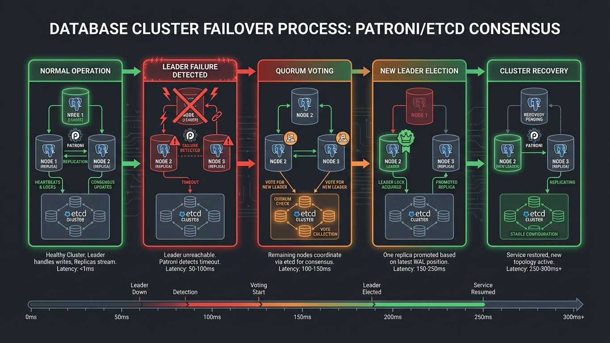
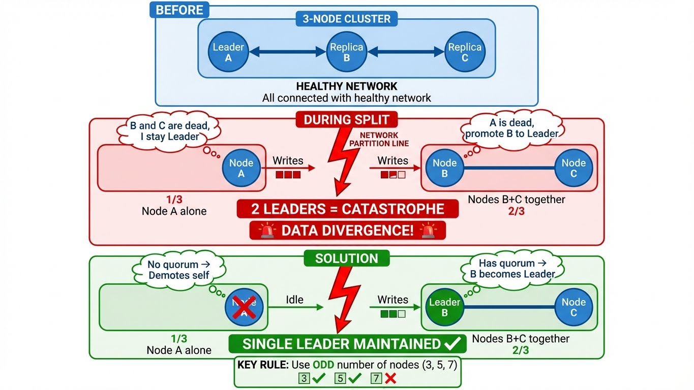
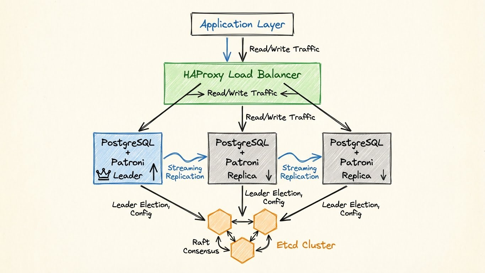
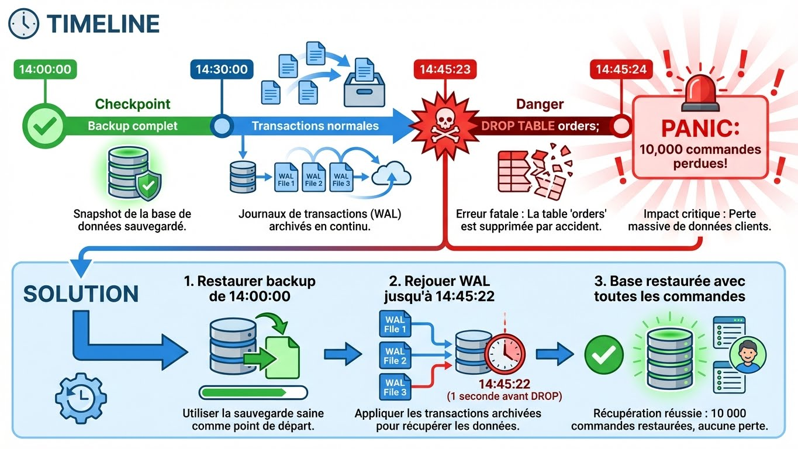

Database High Availability: Patroni & Galera
Transformer la couche de données en service résilient. Failover automatique et zéro perte de données.

Théorie : HA vs DR
Deux Concepts Distincts et Complémentaires

Principe fondamental :
HA ne protège PAS contre les erreurs humaines. HA + DR sont obligatoires en production.
| Type de Panne | HA (Patroni/Galera) | DR (Backups/PITR) |
|---|---|---|
| Serveur crash | ✅ Failover automatique (30s) | ❌ Trop lent (15-60min) |
| Corruption disque | ✅ Basculer sur replica sain | ❌ Si tous corrompus |
| DROP TABLE accidentel | ❌ Se réplique partout | ✅ Restauration PITR |
| Ransomware | ❌ Chiffre tous les nœuds | ✅ Backups offline |
| Data center détruit | ✅ Si multi-DC | ✅ Backups distant |
Le Problème du Split-Brain

Split-Brain = Corruption Garantie
Sans mécanisme de quorum, vous ALLEZ perdre des données. Les systèmes HA sans protection split-brain (anciennes versions MySQL replication, MongoDB sans replica set) sont dangereux en production.
Quorum obligatoire : - PostgreSQL : Etcd/Consul avec 3+ membres - MariaDB : Galera avec 3+ nœuds (wsrep_cluster_size) - MongoDB : Replica Set avec 3+ membres
Calcul du quorum :
| Nombre de nœuds | Quorum | Nœuds tolérés en panne |
|---|---|---|
| 1 | 1 | 0 ❌ (SPOF) |
| 2 | 2 | 0 ❌ (inutile) |
| 3 | 2 | 1 ✅ (minimum production) |
| 5 | 3 | 2 ✅ (multi-DC) |
| 7 | 4 | 3 ✅ (large scale) |
Recommandation : 3 nœuds en production (compromis coût/résilience).
PostgreSQL HA : Le Standard (Patroni)

Architecture : Patroni + Etcd + HAProxy
graph TB
subgraph "Application Layer"
APP1[App Instance 1]
APP2[App Instance 2]
end
subgraph "Load Balancer"
HAProxy[HAProxy<br/>VIP: 10.0.1.100]
end
APP1 -->|Writes| HAProxy
APP2 -->|Reads| HAProxy
subgraph "Database Cluster"
subgraph "Node 1"
P1[Patroni Agent]
PG1[(PostgreSQL<br/>Leader)]
P1 -->|Manage| PG1
end
subgraph "Node 2"
P2[Patroni Agent]
PG2[(PostgreSQL<br/>Replica)]
P2 -->|Manage| PG2
end
subgraph "Node 3"
P3[Patroni Agent]
PG3[(PostgreSQL<br/>Replica)]
P3 -->|Manage| PG3
end
PG1 -.Streaming Replication.-> PG2
PG1 -.Streaming Replication.-> PG3
end
subgraph "Distributed Configuration Store"
ETCD1[Etcd Node 1]
ETCD2[Etcd Node 2]
ETCD3[Etcd Node 3]
ETCD1 -.Raft Consensus.-> ETCD2
ETCD2 -.Raft Consensus.-> ETCD3
ETCD3 -.Raft Consensus.-> ETCD1
end
HAProxy -->|Writes<br/>Port 5000| PG1
HAProxy -->|Reads<br/>Port 5001| PG2
HAProxy -->|Reads<br/>Port 5001| PG3
P1 <-->|Health Check<br/>Leader Election| ETCD2
P2 <-->|Health Check<br/>Leader Election| ETCD2
P3 <-->|Health Check<br/>Leader Election| ETCD2
style PG1 fill:#2196F3,stroke:#fff,stroke-width:3px,color:#fff
style PG2 fill:#2196F3,stroke:#fff,stroke-width:2px,color:#fff
style PG3 fill:#2196F3,stroke:#fff,stroke-width:2px,color:#fff
style HAProxy fill:#f44336,stroke:#fff,stroke-width:2px,color:#fff
style ETCD1 fill:#2196F3,stroke:#fff,stroke-width:2px,color:#fff
style ETCD2 fill:#2196F3,stroke:#fff,stroke-width:2px,color:#fff
style ETCD3 fill:#2196F3,stroke:#fff,stroke-width:2px,color:#fffPourquoi Patroni ?
Patroni = Orchestrateur PostgreSQL qui gère le failover automatique mieux que tout le reste.
Comparaison des solutions PostgreSQL HA :
| Solution | Failover Auto | Fencing | Split-Brain Protection | Complexité |
|---|---|---|---|---|
| Patroni | ✅ Automatique | ✅ Oui | ✅ Quorum Etcd/Consul | Moyenne |
| Repmgr | ⚠️ Semi-auto | ❌ Non | ⚠️ Witness node | Moyenne |
| Pacemaker/Corosync | ✅ Automatique | ✅ STONITH | ✅ Quorum | Élevée |
| Streaming Replication manuelle | ❌ Manuel | ❌ Non | ❌ Non | Faible |
| pgpool-II | ✅ Automatique | ❌ Non | ⚠️ Watchdog | Moyenne |
Avantages Patroni :
- ✅ Fencing automatique : Tue l'ancien Leader avant de promouvoir un Replica (évite split-brain)
- ✅ Réinitialisation automatique : Un nœud défaillant se re-synchronise automatiquement
- ✅ REST API : Intégration facile avec Kubernetes, monitoring, scripts
- ✅ Configuration dynamique : Modification de postgresql.conf sans redémarrage manuel
- ✅ Communauté active : Utilisé par Zalando (créateur), GitLab, Criteo
Composants de l'Architecture
1. Etcd/Consul (DCS - Distributed Configuration Store)
La source de vérité pour le cluster.
| Rôle | Description |
|---|---|
| Leader Lock | Un seul nœud peut obtenir le "leader lock" à la fois |
| Configuration | Stocke la config PostgreSQL (patroni.yml) |
| Health Status | Chaque Patroni enregistre son état (healthy/unhealthy) |
| Timeline | Historique des promotions/failovers |
Installation Etcd :
# Télécharger Etcd
ETCD_VER=v3.5.11
wget https://github.com/etcd-io/etcd/releases/download/${ETCD_VER}/etcd-${ETCD_VER}-linux-amd64.tar.gz
tar xzf etcd-${ETCD_VER}-linux-amd64.tar.gz
sudo mv etcd-${ETCD_VER}-linux-amd64/etcd* /usr/local/bin/
# Créer le service systemd
sudo cat > /etc/systemd/system/etcd.service <<EOF
[Unit]
Description=Etcd Server
After=network.target
[Service]
Type=notify
ExecStart=/usr/local/bin/etcd \\
--name etcd1 \\
--data-dir /var/lib/etcd \\
--listen-client-urls http://10.0.1.11:2379,http://127.0.0.1:2379 \\
--advertise-client-urls http://10.0.1.11:2379 \\
--listen-peer-urls http://10.0.1.11:2380 \\
--initial-advertise-peer-urls http://10.0.1.11:2380 \\
--initial-cluster etcd1=http://10.0.1.11:2380,etcd2=http://10.0.1.12:2380,etcd3=http://10.0.1.13:2380 \\
--initial-cluster-state new
Restart=always
RestartSec=10s
[Install]
WantedBy=multi-user.target
EOF
# Démarrer Etcd
sudo systemctl daemon-reload
sudo systemctl enable --now etcd
# Vérifier le cluster
etcdctl member list
etcdctl endpoint health
2. Patroni Agent (Sidecar sur chaque nœud)
Installation :
# Installer Patroni (Python)
sudo dnf install -y python3-pip python3-psycopg2 # RHEL/Rocky
# sudo apt install -y python3-pip python3-psycopg2 # Debian/Ubuntu
sudo pip3 install patroni[etcd]
# Créer le fichier de configuration
sudo mkdir -p /etc/patroni
sudo cat > /etc/patroni/patroni.yml <<EOF
scope: postgres-cluster
namespace: /db/
name: node1
restapi:
listen: 10.0.1.21:8008
connect_address: 10.0.1.21:8008
etcd:
hosts: 10.0.1.11:2379,10.0.1.12:2379,10.0.1.13:2379
bootstrap:
dcs:
ttl: 30
loop_wait: 10
retry_timeout: 10
maximum_lag_on_failover: 1048576
postgresql:
use_pg_rewind: true
parameters:
max_connections: 200
shared_buffers: 256MB
effective_cache_size: 1GB
wal_level: replica
max_wal_senders: 10
max_replication_slots: 10
hot_standby: on
initdb:
- encoding: UTF8
- data-checksums
pg_hba:
- host replication replicator 10.0.1.0/24 md5
- host all all 10.0.1.0/24 md5
- host all all 0.0.0.0/0 reject
postgresql:
listen: 10.0.1.21:5432
connect_address: 10.0.1.21:5432
data_dir: /var/lib/postgresql/15/main
bin_dir: /usr/lib/postgresql/15/bin
authentication:
replication:
username: replicator
password: rep_password_change_me
superuser:
username: postgres
password: super_password_change_me
tags:
nofailover: false
noloadbalance: false
clonefrom: false
nosync: false
EOF
# Créer le service systemd
sudo cat > /etc/systemd/system/patroni.service <<EOF
[Unit]
Description=Patroni (PostgreSQL HA)
After=network.target
[Service]
Type=simple
User=postgres
Group=postgres
ExecStart=/usr/local/bin/patroni /etc/patroni/patroni.yml
Restart=always
RestartSec=10s
[Install]
WantedBy=multi-user.target
EOF
# Démarrer Patroni
sudo systemctl daemon-reload
sudo systemctl enable --now patroni
Vérifier l'état du cluster :
# Lister les membres
patronictl -c /etc/patroni/patroni.yml list
# Output attendu :
# + Cluster: postgres-cluster (7123456789012345678) ----+----+-----------+
# | Member | Host | Role | State | TL | Lag in MB |
# +--------+-------------+---------+---------+----+-----------+
# | node1 | 10.0.1.21 | Leader | running | 1 | |
# | node2 | 10.0.1.22 | Replica | running | 1 | 0 |
# | node3 | 10.0.1.23 | Replica | running | 1 | 0 |
# +--------+-------------+---------+---------+----+-----------+
3. HAProxy (Routage Intelligent)
Configuration HAProxy pour Patroni :
# /etc/haproxy/haproxy.cfg
global
maxconn 1000
log /dev/log local0
defaults
log global
mode tcp
timeout connect 10s
timeout client 30s
timeout server 30s
# Frontend pour les écritures (Leader uniquement)
listen postgres_write
bind *:5000
option httpchk
http-check expect status 200
default-server inter 3s fall 3 rise 2 on-marked-down shutdown-sessions
server node1 10.0.1.21:5432 maxconn 100 check port 8008
server node2 10.0.1.22:5432 maxconn 100 check port 8008
server node3 10.0.1.23:5432 maxconn 100 check port 8008
# Frontend pour les lectures (Replicas uniquement)
listen postgres_read
bind *:5001
option httpchk GET /replica
http-check expect status 200
default-server inter 3s fall 3 rise 2
server node1 10.0.1.21:5432 maxconn 100 check port 8008
server node2 10.0.1.22:5432 maxconn 100 check port 8008
server node3 10.0.1.23:5432 maxconn 100 check port 8008
# Stats
listen stats
bind *:7000
stats enable
stats uri /
stats refresh 5s
Explication des health checks :
| Endpoint | Rôle | Retourne 200 si |
|---|---|---|
GET / |
Nœud disponible | Leader OU Replica healthy |
GET /leader |
Leader uniquement | Ce nœud est le Leader |
GET /replica |
Replica uniquement | Ce nœud est un Replica (pas le Leader) |
GET /master |
Alias de /leader | (legacy) |
GET /health |
Health check simple | Patroni est vivant |
Tester HAProxy :
# Démarrer HAProxy
sudo systemctl restart haproxy
# Tester l'écriture (vers Leader)
psql -h haproxy-vip -p 5000 -U postgres -c "SELECT pg_is_in_recovery();"
# Output attendu : f (false = Leader)
# Tester la lecture (vers Replicas)
psql -h haproxy-vip -p 5001 -U postgres -c "SELECT pg_is_in_recovery();"
# Output attendu : t (true = Replica)
Opérations Courantes
1. Switchover Manuel (Maintenance)
# Basculer le Leader de node1 vers node2 (sans downtime)
patronictl -c /etc/patroni/patroni.yml switchover
# Output interactif :
# Master [node1]:
# Candidate ['node2', 'node3'] []: node2
# When should the switchover take place (e.g. 2024-01-01T12:00) [now]:
# Current cluster topology
# + Cluster: postgres-cluster (7123456789012345678) --+----+-----------+
# | Member | Host | Role | State | TL | Lag in MB |
# +--------+-------------+---------+---------+----+-----------+
# | node1 | 10.0.1.21 | Leader | running | 1 | |
# | node2 | 10.0.1.22 | Replica | running | 1 | 0 |
# | node3 | 10.0.1.23 | Replica | running | 1 | 0 |
# +--------+-------------+---------+---------+----+-----------+
# Are you sure you want to switchover cluster postgres-cluster, demoting current master node1? [y/N]: y
# 2024-01-15 14:32:11.12345 Successfully switched over to "node2"
# + Cluster: postgres-cluster (7123456789012345678) --+----+-----------+
# | Member | Host | Role | State | TL | Lag in MB |
# +--------+-------------+---------+---------+----+-----------+
# | node1 | 10.0.1.21 | Replica | running | 2 | 0 |
# | node2 | 10.0.1.22 | Leader | running | 2 | |
# | node3 | 10.0.1.23 | Replica | running | 2 | 0 |
# +--------+-------------+---------+---------+----+-----------+
Switchover planifié :
# Switchover à une date/heure précise (maintenance programmée)
patronictl -c /etc/patroni/patroni.yml switchover --scheduled "2024-01-15 03:00:00+00"
2. Failover Automatique (Panne)
Scénario : Le Leader (node1) crash
# Simuler un crash (tuer Patroni sur node1)
sudo systemctl stop patroni # Sur node1
# Logs sur node2/node3 (environ 30 secondes après) :
# 2024-01-15 14:32:00 INFO: Leader key released
# 2024-01-15 14:32:05 INFO: Acquiring leader lock
# 2024-01-15 14:32:06 INFO: Lock acquired, promoting to leader
# 2024-01-15 14:32:10 INFO: promoted self to leader by acquiring session lock
# Vérifier le nouveau cluster
patronictl -c /etc/patroni/patroni.yml list
# Output :
# + Cluster: postgres-cluster (7123456789012345678) --+----+-----------+
# | Member | Host | Role | State | TL | Lag in MB |
# +--------+-------------+---------+---------+----+-----------+
# | node2 | 10.0.1.22 | Leader | running | 2 | |
# | node3 | 10.0.1.23 | Replica | running | 2 | 0 |
# +--------+-------------+---------+---------+----+-----------+
Réintégration automatique de node1 :
# Redémarrer Patroni sur node1
sudo systemctl start patroni # Sur node1
# Patroni détecte automatiquement qu'il est "en retard" et se re-synchronise
# Logs sur node1 :
# 2024-01-15 14:35:00 INFO: Lock owner: node2; I am node1
# 2024-01-15 14:35:01 INFO: trying to bootstrap from leader 'node2'
# 2024-01-15 14:35:05 INFO: replica has been created using basebackup
# 2024-01-15 14:35:10 INFO: establishing a new patroni connection to the postgres cluster
# Vérifier le cluster (node1 réintégré comme Replica)
patronictl -c /etc/patroni/patroni.yml list
# Output :
# + Cluster: postgres-cluster (7123456789012345678) --+----+-----------+
# | Member | Host | Role | State | TL | Lag in MB |
# +--------+-------------+---------+---------+----+-----------+
# | node1 | 10.0.1.21 | Replica | running | 2 | 0 |
# | node2 | 10.0.1.22 | Leader | running | 2 | |
# | node3 | 10.0.1.23 | Replica | running | 2 | 0 |
# +--------+-------------+---------+---------+----+-----------+
3. Modifier la Configuration PostgreSQL
Avantage Patroni : Configuration dynamique via Etcd (sans éditer manuellement postgresql.conf).
# Modifier un paramètre (exemple : augmenter shared_buffers)
patronictl -c /etc/patroni/patroni.yml edit-config
# Éditeur s'ouvre avec la config actuelle (YAML) :
# loop_wait: 10
# maximum_lag_on_failover: 1048576
# postgresql:
# parameters:
# max_connections: 200
# shared_buffers: 256MB # ← Modifier ici
# ...
# Sauvegarder et quitter
# Patroni redémarre PostgreSQL sur TOUS les nœuds avec la nouvelle config
# Vérifier
psql -h haproxy-vip -p 5000 -U postgres -c "SHOW shared_buffers;"
# Output : 512MB
4. Monitoring avec l'API REST
# Status d'un nœud (JSON)
curl http://10.0.1.21:8008/
# Output :
# {
# "state": "running",
# "postmaster_start_time": "2024-01-15 14:00:00.123456+00:00",
# "role": "replica",
# "server_version": 150001,
# "cluster_unlocked": false,
# "timeline": 2,
# "database_system_identifier": "7123456789012345678"
# }
# Health check pour monitoring (Prometheus, Nagios)
curl http://10.0.1.21:8008/health
# Output si OK : 200 OK
# Output si KO : 503 Service Unavailable
# Intégration Prometheus
# GET http://10.0.1.21:8008/metrics (avec postgres_exporter)
MariaDB HA : Galera Cluster
Concept : Réplication Synchrone Multi-Maître
Galera = Tous les nœuds sont des "Masters" (peuvent recevoir des écritures).

Architecture Galera :
graph TB
subgraph "Application Layer"
APP[Application]
end
subgraph "Load Balancer"
LB[HAProxy/ProxySQL<br/>VIP: 10.0.2.100]
end
APP -->|SQL| LB
subgraph "Galera Cluster (wsrep)"
NODE1[(MariaDB Node 1<br/>10.0.2.11)]
NODE2[(MariaDB Node 2<br/>10.0.2.12)]
NODE3[(MariaDB Node 3<br/>10.0.2.13)]
NODE1 <-.Certification<br/>Replication.-> NODE2
NODE2 <-.Certification<br/>Replication.-> NODE3
NODE3 <-.Certification<br/>Replication.-> NODE1
end
LB -->|R/W| NODE1
LB -->|R/W| NODE2
LB -->|R/W| NODE3
style NODE1 fill:#FF9800,stroke:#fff,stroke-width:2px,color:#fff
style NODE2 fill:#FF9800,stroke:#fff,stroke-width:2px,color:#fff
style NODE3 fill:#FF9800,stroke:#fff,stroke-width:2px,color:#fff
style LB fill:#f44336,stroke:#fff,stroke-width:2px,color:#fffInstallation Galera Cluster
Prérequis : - MariaDB 10.5+ (Galera 4 intégré) - Latence réseau < 5ms entre nœuds (critique pour les performances) - Tables InnoDB uniquement (MyISAM non supporté)
# Installation MariaDB avec Galera (sur les 3 nœuds)
sudo apt update
sudo apt install -y mariadb-server mariadb-client galera-4 rsync
# Arrêter MariaDB (config avant démarrage)
sudo systemctl stop mariadb
Configuration Galera (Node 1 - 10.0.2.11) :
# /etc/mysql/mariadb.conf.d/60-galera.cnf
[mysqld]
# Bindings
bind-address = 10.0.2.11
# Galera Provider Configuration
wsrep_on = ON
wsrep_provider = /usr/lib/galera/libgalera_smm.so
# Cluster Configuration
wsrep_cluster_name = "production_cluster"
wsrep_cluster_address = "gcomm://10.0.2.11,10.0.2.12,10.0.2.13"
# Node Configuration
wsrep_node_name = "node1"
wsrep_node_address = "10.0.2.11"
# Replication Configuration
wsrep_sst_method = rsync # Ou mariabackup (plus rapide)
wsrep_slave_threads = 4
# InnoDB Configuration (obligatoire)
default_storage_engine = InnoDB
innodb_autoinc_lock_mode = 2
innodb_flush_log_at_trx_commit = 0
innodb_buffer_pool_size = 1G
# Binlog (optionnel pour MySQL 8 compatibility)
binlog_format = ROW
Configuration Node 2 et Node 3 : Identique sauf wsrep_node_name et wsrep_node_address.
Bootstrap : Le Démarrage Initial (DANGEREUX)
Bootstrap : Commande la Plus Dangereuse de Galera
galera_new_cluster ne doit être exécuté QU'UNE SEULE FOIS au tout premier démarrage du cluster.
JAMAIS EN PRODUCTION SUR UN CLUSTER EXISTANT (risque de split-brain et perte de données).
Si vous bootstrap alors que d'autres nœuds tournent, vous créez un nouveau cluster vide qui écrase les données existantes.
Premier démarrage (une seule fois) :
# Sur Node 1 UNIQUEMENT (pour initialiser le cluster)
sudo galera_new_cluster
# Vérifier que le cluster est créé
sudo mysql -u root -e "SHOW STATUS LIKE 'wsrep_cluster_size';"
# Output :
# +--------------------+-------+
# | Variable_name | Value |
# +--------------------+-------+
# | wsrep_cluster_size | 1 |
# +--------------------+-------+
# Créer l'utilisateur de réplication
sudo mysql -u root <<EOF
CREATE USER 'replication'@'%' IDENTIFIED BY 'repl_password_change_me';
GRANT REPLICATION SLAVE ON *.* TO 'replication'@'%';
FLUSH PRIVILEGES;
EOF
Démarrer les nœuds 2 et 3 (jointure automatique) :
# Sur Node 2
sudo systemctl start mariadb
# Sur Node 3
sudo systemctl start mariadb
# Vérifier le cluster (sur n'importe quel nœud)
sudo mysql -u root -e "SHOW STATUS LIKE 'wsrep_cluster_size';"
# Output :
# +--------------------+-------+
# | Variable_name | Value |
# +--------------------+-------+
# | wsrep_cluster_size | 3 |
# +--------------------+-------+
# Vérifier l'état de tous les membres
sudo mysql -u root -e "SHOW STATUS LIKE 'wsrep_%';" | grep -E 'cluster_status|cluster_size|ready|connected'
# Output attendu :
# wsrep_cluster_status | Primary
# wsrep_cluster_size | 3
# wsrep_ready | ON
# wsrep_connected | ON
Contraintes et Limitations
1. Tables InnoDB Obligatoires
-- ✗ NE FONCTIONNE PAS (MyISAM non répliqué)
CREATE TABLE users (
id INT PRIMARY KEY,
name VARCHAR(100)
) ENGINE=MyISAM;
-- ✓ CORRECT (InnoDB uniquement)
CREATE TABLE users (
id INT PRIMARY KEY,
name VARCHAR(100)
) ENGINE=InnoDB;
2. Latence Réseau Critique
| Latence | Performance | Recommandation |
|---|---|---|
| < 1ms | Excellente | LAN même datacenter ✅ |
| 1-5ms | Acceptable | LAN différents racks ⚠️ |
| 5-20ms | Dégradée | WAN même région ❌ |
| > 20ms | Inutilisable | Multi-région ❌❌❌ |
Pourquoi ? Galera attend le quorum avant chaque COMMIT. Si la latence est élevée, chaque transaction devient lente.
3. Conflits de Transactions (Certification Failure)
-- Scénario problématique :
-- Transaction 1 (Node 1) : UPDATE users SET balance = balance - 100 WHERE id = 1;
-- Transaction 2 (Node 2) : UPDATE users SET balance = balance - 50 WHERE id = 1;
-- Si les deux transactions se produisent simultanément :
-- 1. Node 1 envoie sa transaction au cluster
-- 2. Node 2 envoie sa transaction au cluster
-- 3. Galera détecte le conflit (même ligne modifiée)
-- 4. L'une des deux transactions est ROLLBACK (certification failure)
-- 5. L'application reçoit une erreur "DEADLOCK"
-- Solution : Écrire sur un seul nœud (via HAProxy) ou gérer les retry
Récupération après Panne Totale (Tous les Nœuds Arrêtés)
Fichier grastate.dat : La Clé de la Récupération
/var/lib/mysql/grastate.dat contient l'état de chaque nœud. La valeur safe_to_bootstrap détermine quel nœud peut redémarrer le cluster.
NE JAMAIS éditer ce fichier sans comprendre les conséquences.
Scénario : Panne de courant, tous les nœuds sont arrêtés.
# Étape 1 : Identifier le nœud le plus à jour (sur chaque nœud)
sudo cat /var/lib/mysql/grastate.dat
# Node 1 :
# # GALERA saved state
# version: 2.1
# uuid: 12345678-1234-1234-1234-123456789012
# seqno: 1234567 # ← Plus haute valeur = plus récent
# safe_to_bootstrap: 0
# Node 2 :
# seqno: 1234560 # ← Plus ancien
# Node 3 :
# seqno: 1234550 # ← Plus ancien
# Étape 2 : Marquer le nœud le plus récent comme safe_to_bootstrap
# Sur Node 1 (seqno le plus élevé)
sudo mysqld_safe --wsrep-recover
# Output :
# WSREP: Recovered position: 12345678-1234-1234-1234-123456789012:1234567
# Éditer grastate.dat (sur Node 1 uniquement)
sudo nano /var/lib/mysql/grastate.dat
# Modifier :
# safe_to_bootstrap: 1 # ← Changer 0 en 1
# Étape 3 : Bootstrap depuis Node 1
sudo galera_new_cluster
# Étape 4 : Démarrer Node 2 et Node 3 (jointure automatique)
# Sur Node 2
sudo systemctl start mariadb
# Sur Node 3
sudo systemctl start mariadb
# Vérifier le cluster
sudo mysql -u root -e "SHOW STATUS LIKE 'wsrep_cluster_size';"
# Output : 3
Commandes de vérification :
# Voir l'état du cluster
mysql -u root -e "SHOW STATUS LIKE 'wsrep_%';"
# Variables importantes :
# wsrep_cluster_status | Primary (ou Non-Primary si problème)
# wsrep_cluster_size | 3
# wsrep_ready | ON
# wsrep_connected | ON
# wsrep_local_state_comment| Synced (ou Donor, Joiner, etc.)
# wsrep_incoming_addresses | 10.0.2.11:3306,10.0.2.12:3306,10.0.2.13:3306
# Voir les événements de certification
mysql -u root -e "SHOW STATUS LIKE 'wsrep_local_cert_failures';"
# Si > 0 : Des transactions ont été rejetées (conflits)
Disaster Recovery : PITR avec pgBackRest
Concept : Point-in-Time Recovery
PITR = Restaurer la base de données à une seconde précise dans le passé.

Architecture pgBackRest :
graph LR
PG[(PostgreSQL<br/>Leader)]
WAL[WAL Archive<br/>/var/lib/pgbackrest]
S3[(S3 / MinIO<br/>Object Storage)]
PG -->|WAL Streaming| WAL
WAL -->|Backup Push| S3
S3 -->|Restore| PG
style PG fill:#2196F3,stroke:#fff,stroke-width:2px,color:#fff
style S3 fill:#4CAF50,stroke:#fff,stroke-width:2px,color:#fff
style WAL fill:#f44336,stroke:#fff,stroke-width:2px,color:#fffPourquoi pgBackRest ?
| Solution | Compression | Parallélisme | Chiffrement | S3 Natif | Restauration Partielle |
|---|---|---|---|---|---|
| pgBackRest | ✅ Zstd/Gzip | ✅ Multi-thread | ✅ AES-256 | ✅ S3/Azure/GCS | ✅ Delta restore |
| Barman | ✅ Gzip | ⚠️ Limité | ⚠️ Via rclone | ⚠️ Via rclone | ❌ Non |
| WAL-G | ✅ Zstd/Brotli | ✅ Multi-thread | ✅ GPG | ✅ S3/Azure/GCS | ⚠️ Limitée |
| pg_basebackup | ❌ Non | ❌ Single-thread | ❌ Non | ❌ Non | ❌ Non |
Avantages pgBackRest : - ✅ Backup incrémental/différentiel (seulement les blocs modifiés) - ✅ Parallélisme (backup/restore multi-thread ultra-rapide) - ✅ Compression native (Zstd = meilleur ratio) - ✅ Chiffrement S3 (AES-256 server-side) - ✅ Rétention automatique (supprimer les vieux backups)
Installation et Configuration
# Installation pgBackRest
sudo apt install -y pgbackrest
# Créer la configuration
sudo mkdir -p /var/log/pgbackrest /var/lib/pgbackrest
sudo chown -R postgres:postgres /var/log/pgbackrest /var/lib/pgbackrest
# Configuration pgBackRest
sudo cat > /etc/pgbackrest.conf <<EOF
[global]
repo1-path=/var/lib/pgbackrest
repo1-retention-full=2
repo1-retention-diff=4
repo1-cipher-type=aes-256-cbc
repo1-cipher-pass=encryption_key_change_me
# S3 (optionnel, recommandé en production)
# repo1-type=s3
# repo1-s3-bucket=my-postgres-backups
# repo1-s3-endpoint=s3.amazonaws.com
# repo1-s3-region=eu-west-1
# repo1-s3-key=AWS_ACCESS_KEY_ID
# repo1-s3-key-secret=AWS_SECRET_ACCESS_KEY
log-level-console=info
log-level-file=debug
[prod-db]
pg1-path=/var/lib/postgresql/15/main
pg1-port=5432
pg1-user=postgres
EOF
# Configuration PostgreSQL pour l'archivage WAL
sudo cat >> /etc/postgresql/15/main/postgresql.conf <<EOF
# WAL Archiving pour pgBackRest
wal_level = replica
archive_mode = on
archive_command = 'pgbackrest --stanza=prod-db archive-push %p'
max_wal_senders = 3
wal_keep_size = 1GB
EOF
# Redémarrer PostgreSQL
sudo systemctl restart postgresql
# Créer le stanza (config pgBackRest)
sudo -u postgres pgbackrest --stanza=prod-db stanza-create
# Vérifier la configuration
sudo -u postgres pgbackrest --stanza=prod-db check
# Output attendu :
# P00 INFO: check command begin
# P00 INFO: WAL segment 000000010000000000000001 successfully archived
# P00 INFO: check command end: completed successfully
Backups : Full, Differential, Incremental
Types de backups :
| Type | Taille | Durée | Usage |
|---|---|---|---|
| Full | 100% | ~1h (100GB) | Hebdomadaire |
| Differential | ~30% | ~20min | Quotidien |
| Incremental | ~10% | ~5min | Toutes les 4h |
# Backup Full (initial)
sudo -u postgres pgbackrest --stanza=prod-db --type=full backup
# Output :
# P00 INFO: backup command begin 2.48: --repo1-cipher-pass=<redacted> --repo1-cipher-type=aes-256-cbc
# P00 INFO: execute non-exclusive backup start: backup begins after the next regular checkpoint completes
# P00 INFO: backup start archive = 000000010000000000000002
# P01 INFO: backup file /var/lib/postgresql/15/main/base/16384/2619 (544KB, 0.4%)
# ...
# P00 INFO: new backup label = 20240115-140000F
# P00 INFO: full backup size = 10.2GB, file total = 12543
# P00 INFO: backup command end: completed successfully
# Backup Differential (basé sur le dernier Full)
sudo -u postgres pgbackrest --stanza=prod-db --type=diff backup
# Backup Incremental (basé sur le dernier Differential ou Full)
sudo -u postgres pgbackrest --stanza=prod-db --type=incr backup
# Lister les backups disponibles
sudo -u postgres pgbackrest --stanza=prod-db info
# Output :
# stanza: prod-db
# status: ok
# cipher: aes-256-cbc
#
# db (current)
# wal archive min/max (15): 000000010000000000000001/000000010000000000000005
#
# full backup: 20240115-140000F
# timestamp start/stop: 2024-01-15 14:00:00 / 2024-01-15 14:15:32
# wal start/stop: 000000010000000000000002 / 000000010000000000000003
# database size: 10.2GB, database backup size: 10.2GB
# repo1: backup set size: 3.1GB, backup size: 3.1GB
#
# diff backup: 20240115-140000F_20240116-020000D
# timestamp start/stop: 2024-01-16 02:00:00 / 2024-01-16 02:08:12
# wal start/stop: 000000010000000000000004 / 000000010000000000000005
# database size: 10.5GB, database backup size: 512MB
# repo1: backup set size: 3.2GB, backup size: 150MB
Restauration : Point-in-Time Recovery
Scénario : Restaurer à 1 seconde avant la catastrophe.
# Arrêter PostgreSQL
sudo systemctl stop postgresql
# Restaurer le backup (automatiquement choisit Full + Diff + Incr + WAL)
sudo -u postgres pgbackrest --stanza=prod-db --type=time \
--target="2024-01-15 14:45:22" \
--delta restore
# Output :
# P00 INFO: restore command begin 2.48
# P00 INFO: restore backup set 20240115-140000F_20240116-020000D, recovery will start at 2024-01-16 02:00:00
# P01 INFO: restore file /var/lib/postgresql/15/main/base/16384/2619 (544KB, 0.4%)
# ...
# P00 INFO: write updated /var/lib/postgresql/15/main/postgresql.auto.conf
# P00 INFO: restore global/pg_control (performed last to ensure aborted restores cannot be started)
# P00 INFO: restore command end: completed successfully
# pgBackRest a créé recovery.signal et configuré postgresql.auto.conf
# Contenu de postgresql.auto.conf :
# restore_command = 'pgbackrest --stanza=prod-db archive-get %f "%p"'
# recovery_target_time = '2024-01-15 14:45:22'
# recovery_target_action = promote
# Démarrer PostgreSQL (rejoue automatiquement les WAL jusqu'au point cible)
sudo systemctl start postgresql
# Vérifier les logs PostgreSQL
sudo tail -f /var/log/postgresql/postgresql-15-main.log
# Output :
# 2024-01-15 14:50:00 UTC [12345]: LOG: starting point-in-time recovery to 2024-01-15 14:45:22+00
# 2024-01-15 14:50:05 UTC [12345]: LOG: restored log file "000000010000000000000004" from archive
# ...
# 2024-01-15 14:50:30 UTC [12345]: LOG: recovery stopping before commit of transaction 12345, time 2024-01-15 14:45:23
# 2024-01-15 14:50:31 UTC [12345]: LOG: recovery has paused
# 2024-01-15 14:50:32 UTC [12345]: LOG: selected new timeline ID: 2
# 2024-01-15 14:50:33 UTC [12345]: LOG: archive recovery complete
# 2024-01-15 14:50:34 UTC [12345]: LOG: database system is ready to accept connections
# Vérifier les données
psql -U postgres -c "SELECT COUNT(*) FROM orders;"
# Output : 10000 (toutes les commandes récupérées !)
Options de restauration :
# Restaurer au backup le plus récent (pas de PITR)
pgbackrest --stanza=prod-db restore
# Restaurer à une date/heure précise (PITR)
pgbackrest --stanza=prod-db --type=time --target="2024-01-15 14:45:22" restore
# Restaurer jusqu'à une transaction spécifique
pgbackrest --stanza=prod-db --type=xid --target="12345678" restore
# Restaurer jusqu'à un nom de point de sauvegarde
pgbackrest --stanza=prod-db --type=name --target="before_migration" restore
# Delta restore (seulement les fichiers modifiés, ultra-rapide)
pgbackrest --stanza=prod-db --delta restore
Automatisation des Backups (Cron)
# /etc/cron.d/pgbackrest
# Backup Full hebdomadaire (dimanche 2h)
0 2 * * 0 postgres pgbackrest --stanza=prod-db --type=full backup
# Backup Differential quotidien (2h, sauf dimanche)
0 2 * * 1-6 postgres pgbackrest --stanza=prod-db --type=diff backup
# Backup Incremental toutes les 4h
0 */4 * * * postgres pgbackrest --stanza=prod-db --type=incr backup
# Vérification hebdomadaire (lundi 3h)
0 3 * * 1 postgres pgbackrest --stanza=prod-db check
Référence Rapide
Comparaison PostgreSQL vs MariaDB HA
| Critère | PostgreSQL (Patroni) | MariaDB (Galera) |
|---|---|---|
| Type de réplication | Asynchrone (streaming) | Synchrone (certification) |
| Topology | Leader-Replica (single writer) | Multi-Master (multi writer) |
| Failover | Automatique (Patroni) | Automatique (quorum) |
| Split-Brain Protection | ✅ Etcd/Consul quorum | ✅ wsrep quorum |
| Perte de données possible | ⚠️ Oui (si async) | ❌ Non (sync) |
| Latence réseau critique | ⚠️ Moyenne (< 50ms) | ✅ Très critique (< 5ms) |
| Complexité | Moyenne (3 composants) | Faible (Galera seul) |
| Conflit de transactions | ❌ Impossible (single writer) | ✅ Possible (certification failure) |
| Cas d'usage | OLTP général, gros volumes | OLTP faible latence, même DC |
Checklist de Survie en Cas de Panne Cluster
PostgreSQL (Patroni)
# 1. Identifier le problème
patronictl -c /etc/patroni/patroni.yml list
# Vérifier : Y a-t-il un Leader ? Les Replicas sont-ils connectés ?
# 2. Vérifier Etcd
etcdctl endpoint health
etcdctl member list
# 3. Logs Patroni
sudo journalctl -u patroni -f
# 4. Forcer un switchover si le Leader est zombie
patronictl -c /etc/patroni/patroni.yml switchover --force
# 5. Réinitialiser un Replica défaillant
patronictl -c /etc/patroni/patroni.yml reinit postgres-cluster node2
# 6. En dernier recours : Pause automatique et intervention manuelle
patronictl -c /etc/patroni/patroni.yml pause
# Attention : Plus de failover automatique !
MariaDB (Galera)
# 1. Vérifier l'état du cluster
mysql -u root -e "SHOW STATUS LIKE 'wsrep_%';"
# Variables critiques : wsrep_cluster_status, wsrep_cluster_size, wsrep_ready
# 2. Si cluster en état "Non-Primary" (split-brain)
# Sur le nœud à garder :
mysql -u root -e "SET GLOBAL wsrep_provider_options='pc.bootstrap=true';"
# 3. Si tous les nœuds sont arrêtés
# Identifier le nœud le plus récent :
sudo cat /var/lib/mysql/grastate.dat # Vérifier seqno
sudo mysqld_safe --wsrep-recover
# Bootstrap depuis le nœud le plus récent :
sudo galera_new_cluster # Sur 1 seul nœud !
# 4. Réintégrer un nœud
sudo systemctl start mariadb
# Galera fait automatiquement un SST (State Snapshot Transfer)
# 5. Vérifier la certification
mysql -u root -e "SHOW STATUS LIKE 'wsrep_local_cert_failures';"
# Si > 0 : Conflits de transactions (revoir l'architecture applicative)
Commandes pgBackRest Essentielles
# Créer un backup Full
pgbackrest --stanza=prod-db --type=full backup
# Lister les backups
pgbackrest --stanza=prod-db info
# Restaurer le dernier backup
pgbackrest --stanza=prod-db restore
# PITR à une date précise
pgbackrest --stanza=prod-db --type=time --target="2024-01-15 14:45:22" restore
# Vérifier la configuration
pgbackrest --stanza=prod-db check
# Expirer les vieux backups (selon rétention)
pgbackrest --stanza=prod-db expire
# Tester un restore sans écraser la prod (--target-timeline)
pgbackrest --stanza=prod-db --type=time --target="2024-01-15 14:00:00" \
--pg1-path=/var/lib/postgresql/restore-test restore
Pour Aller Plus Loin
PostgreSQL HA
- Patroni Documentation
- Etcd Documentation
- PostgreSQL Streaming Replication
- HAProxy Configuration Guide